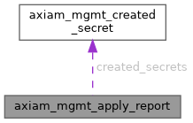

|
AXIAM C SDK 1.0.0-beta17
C11 client SDK for AXIAM (CONTRACT.md §1-§7, §9-§11, §13 incl. §6.1 mTLS)
|
What axiam_mgmt_apply actually did — including, when it stopped early, what it had already done. More...
#include <management_manifest.h>

Data Fields | |
| size_t | applied |
| How many entity changes landed. | |
| long | failed |
Index into changes of the failing one, or -1 when none failed. | |
| size_t | remaining |
| How many entity changes were never attempted because of the failure. | |
| size_t | bindings_applied |
| How many binding changes landed. | |
| long | failed_binding |
Index into bindings of the failing one, or -1. | |
| size_t | bindings_remaining |
| How many binding changes were never attempted. | |
| int | restore_attempted |
For an AXIAM_MGMT_BINDING_UPDATE whose ASSIGN half failed (the unassign having already landed): 1 once a restore of the previous binding was attempted, and, of those, 1 again if it succeeded. | |
| int | restore_succeeded |
| axiam_mgmt_created_secret_t * | created_secrets |
| One per service-account Create. | |
| size_t | created_secrets_count |
What axiam_mgmt_apply actually did — including, when it stopped early, what it had already done.
This is the recovery tool. applied is how many entity changes landed, in order; failed is the index of the one that did not (or -1); remaining is how many were never attempted. bindings_applied/failed_binding/bindings_remaining are the same three, for the binding phase — entity changes and binding changes are reported separately because they are two different arrays in the plan (see axiam_mgmt_plan_t), not because they run at unrelated times; axiam_mgmt_apply()'s doc comment gives the exact interleaving.
created_secrets is filled incrementally as each service-account Create lands — CONTRACT.md §27.5 rule 5's "the outcome MUST be returned even when a later action of
the same apply fails": a caller reads it however apply() returns, success or not. Free with axiam_mgmt_apply_report_dispose.
| size_t axiam_mgmt_apply_report::applied |
How many entity changes landed.
| long axiam_mgmt_apply_report::failed |
Index into changes of the failing one, or -1 when none failed.
| size_t axiam_mgmt_apply_report::remaining |
How many entity changes were never attempted because of the failure.
| size_t axiam_mgmt_apply_report::bindings_applied |
How many binding changes landed.
| long axiam_mgmt_apply_report::failed_binding |
Index into bindings of the failing one, or -1.
| size_t axiam_mgmt_apply_report::bindings_remaining |
How many binding changes were never attempted.
| int axiam_mgmt_apply_report::restore_attempted |
For an AXIAM_MGMT_BINDING_UPDATE whose ASSIGN half failed (the unassign having already landed): 1 once a restore of the previous binding was attempted, and, of those, 1 again if it succeeded.
Both 0 when no rebind failed this way.
| int axiam_mgmt_apply_report::restore_succeeded |
| axiam_mgmt_created_secret_t* axiam_mgmt_apply_report::created_secrets |
One per service-account Create.
| size_t axiam_mgmt_apply_report::created_secrets_count |